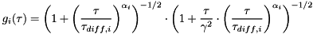

![\[ G(\tau)=G_\infty+\frac{1}{N}\cdot\left(\frac{1-\Theta_{non}+\Theta_{non}\mathrm{e}^{-\tau/\tau_{non}}-\Theta_{trip}+\Theta_{trip}\mathrm{e}^{-\tau/\tau_{trip}}}{1-\Theta_{non}-\Theta_{trip}}\right)\cdot\left[(1-\rho_2-\rho_3)\cdot g_1(\tau)+\rho_2\cdot g_2(\tau)+\rho_3\cdot g_3(\tau)\right] \]](./pic/form_2.png)
This plugin implements a 2D/3D diffusion model including anomalous diffusion and up to two non-fluorescent components (e.g. triplet state dynamics) for the fitting routines in QuickFit 3. The model may be denoted as:
with different choices for  (depending in the user settings):
(depending in the user settings):
![\[ g_i(\tau)=\left(1+\left(\frac{\tau}{\tau_{diff,i}}\right)^{\alpha_i}\right)^{-1}\cdot\left(1+\frac{\tau}{\gamma^2}\cdot\left(\frac{\tau}{\tau_{diff,i}}\right)^{\alpha_i}\right)^{-1/2} \]](./pic/form_25.png)
![\[ g_i(\tau)=\left(1+\left(\frac{\tau}{\tau_{diff,i}}\right)^{\alpha_i}\right)^{-1} \]](./pic/form_26.png)

For the normal diffusion variants: simply fix  .
.
The parameters are:
 : offset of the correlation function
: offset of the correlation function : overall particle number (including currently dark particles, e.g. in triplet state)
: overall particle number (including currently dark particles, e.g. in triplet state) : fraction of the particles in one of the first two non-fluorescent states (priplet, ...)
: fraction of the particles in one of the first two non-fluorescent states (priplet, ...) : diffusion decay time of the i-th diffusing component
: diffusion decay time of the i-th diffusing component : aspect ratio of the gaussian used to approximate the focus
: aspect ratio of the gaussian used to approximate the focus : lateral half axis of the focus gaussian
: lateral half axis of the focus gaussian : longitudinal half axis of the focus gaussian
: longitudinal half axis of the focus gaussianThis model also calculates the diffusion coefficient, if the width of the laser focus (xy plane) is known, as:
![\[ D=\frac{w_{xy}^2}{4\tau_D} \]](./pic/form_20.png)
where  is the diffusion time. Also the effective focal volume
is the diffusion time. Also the effective focal volume  is calculated:
is calculated:
![\[ V_{eff}=\pi^{3/2}\cdot\gamma\cdot w_{xy}^3 \]](./pic/form_14.png)
Given this focal volume, the plugin may also calculate the particle concentration in the sample:
![\[ C=\frac{N}{V_{eff}} \]](./pic/form_15.png)
The plugin also calculates some parameter errors:
![\[ \Delta \left(\frac{1}{N}\right)=\left|\frac{\Delta N}{N^2}\right| \]](./pic/form_16.png)
![\[ \Delta D=\sqrt{\left(\Delta w_{xy}\cdot\frac{w_{xy}}{2\tau_D}\right)^2+\left(\Delta \tau_D\cdot\frac{w_{xy}^2}{4\tau_D^2}\right)^2} \]](./pic/form_23.png)
![\[ \Delta V_{eff}=\sqrt{\left(\Delta\gamma\cdot\pi^{3/2}\cdot w_{xy}^3\right)^2+\left(\Delta w_{xy}\cdot 3\pi^{3/2}\cdot \gamma\cdot w_{xy}^2\right)^2} \]](./pic/form_17.png)
![\[ \Delta C=\sqrt{\left(\frac{\Delta N}{\pi^{3/2}\cdot\gamma\cdot w_{xy}^{3}}\right)^2+\left(\Delta\gamma\cdot\frac{N}{\pi^{3/2}\cdot w{xy}^3\cdot\gamma^2}\right)^2+\left(\Delta w_{xy}\cdot\frac{3\cdot N}{\pi^{3/2}\cdot\gamma\cdot w_{xy}^4}\right)^2} \]](./pic/form_18.png)